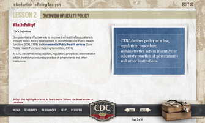
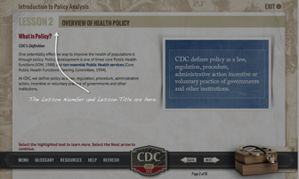
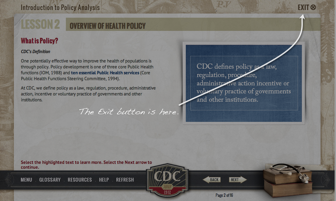
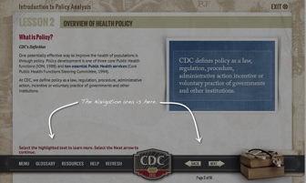
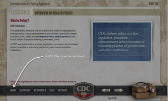
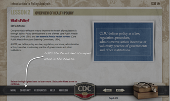
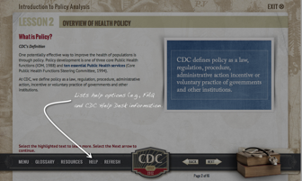
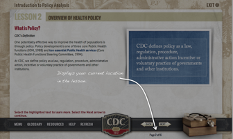

Lesson 1
Getting Around the Course
Navigation Elements
| Display Graphic | Display Text | Audio |
|---|---|---|
|  |
|
This course has been designed with several features that will help you get the most out of your learning experience. Let’s look at the static elements of the screen – or the parts that remain the same throughout each lesson. |
|  |
|
At the top left of each screen you’ll find the lesson number and lesson title. |
|  |
|
At the top right, you’ll find the Exit button. Selecting the Exit button closes the course and tracks your location in the course, so you may continue where you left off. If you click this button, you will be prompted to verify that you really do want to quit. If you exit the course in any other way, such as closing the window, your progress will NOT be saved! Therefore, it is recommended that you exit the course by clicking the Exit button. |
|  |
|
Now let’s look at the navigation elements at the bottom of the screen. |
|  |
|
Selecting the Menu button will take you to the Lesson menu with a list of lessons in the course. Selecting a lesson title takes you to the first screen of the lesson. |
|  | When the Glossary button is selected, it launches a page in a new window listing the terms and acronyms used throughout the course. The glossary can be accessed at any time throughout the course. | |
|
|
Selecting the Resources button launches a page in a new window that contains websites, documents, and job aids relevant to the lesson. The Resources can be accessed at any time throughout the lesson. |
|
|  | When the Help button is selected, it displays a page in a new window with a list of help options including frequently asked questions F-A-Qs and CDC Help Desk information for example, phone number and email address. This help button can be accessed at all times throughout the course. | |
| Selecting the Refresh button refreshes the current page. | ||
|  | At the bottom right of the screen you’ll find the page number area that shows you the current page number and the total number of pages in the lesson. | |
| You’ve reached the end of the navigation tutorial portion of this lesson. Close this popup window to continue to the next topic, where you’ll learn about what to expect while taking the course. |